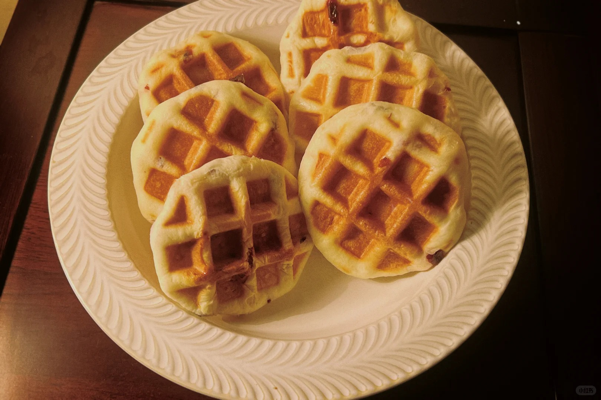
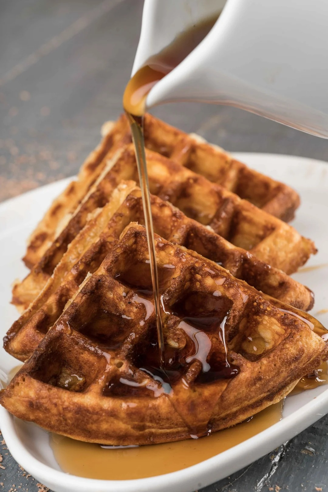

华夫饼



华夫饼（Waffle）是一种源于比利时的烤饼，又叫格子饼、格仔饼。用配有专用烤盘的烤炉制成。因为烤盘中的格子一般都是菱形或方形的，烤出的华夫饼也就有着漂亮的方格。华夫饼属于点心类，主要原料是鸡蛋和牛奶，含有丰富的蛋白质、脂肪、维生素和铁、钙、钾等人体所需要的矿物质。华夫饼在许多国家都很受欢迎，而在不同的地方也有着不同吃法。比如美国人喜欢吃华夫饼时抹枫糖汁，而德国人喜欢配樱桃和奶油。
制作方法：

华夫饼（Waffle）是一种源于比利时的烤饼，又叫格子饼、格仔饼。用配有专用烤盘的烤炉制成。因为烤盘中的格子一般都是菱形或方形的，烤出的华夫饼也就有着漂亮的方格。华夫饼属于点心类，主要原料是鸡蛋和牛奶，含有丰富的蛋白质、脂肪、维生素和铁、钙、钾等人体所需要的矿物质。华夫饼在许多国家都很受欢迎，而在不同的地方也有着不同吃法。比如美国人喜欢吃华夫饼时抹枫糖汁，而德国人喜欢配樱桃和奶油。
关于我们|联系我们|邮箱：@qq.com|友情链接